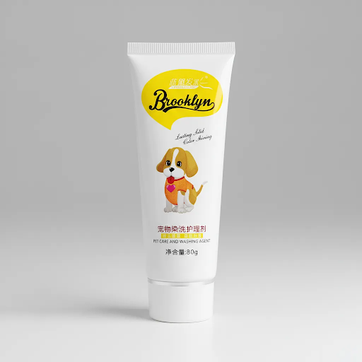

چرا رنگ موی مخصوص سگ لازم است؟
رنگهای انسانی معمولاً حاوی آمونیاک، پراکسید یا ترکیبات نفوذی هستند که برای پوست انسان فرموله شدهاند. روی سگ همین مواد میتوانند باعث خشکی، التهاب، خارش یا حتی آسیب به فولیکول مو شوند. رنگ موی سگ Brooklyn با پیگمنتهای Food-Grade و بدون آمونیاک، بهصورت سطحی روی ساقه مو مینشیند و هدفش تغییر ظاهر بدون به خطر انداختن سلامت حیوان است.
این محصول برای صاحبان حیوان خانگی و گرومرهایی مناسب است که میخواهند خدمات رنگآمیزی حرفهای ارائه دهند، بدون نگرانی از بوی تند شیمیایی یا تحریک پوست.
روی چه نژاد و رنگ مویی بهتر جواب میدهد؟
نتیجه رنگ موی سگ روی موهای روشن و سفید واضحتر دیده میشود. نژادهایی مثل پودل، شیتزو، مالتیز، پامرانین، ساموید و سگهای با پوشش کرمرنگ معمولاً بهترین کنتراست را میگیرند. روی موهای خیلی تیره یا مشکی، رنگ فانتزی ممکن است کمرنگ یا نامرئی به نظر برسد؛ در این حالت بهتر است فقط بخشهای روشنتر (مثل نوک دم یا جیبهای سفید) رنگ شوند.
- موی روشن/سفید: بهترین نتیجه برای آبی، صورتی، بنفش و سرخابی
- موی کرم یا خاکستری روشن: جلوه ملایم و طبیعیتر
- موی تیره: نیاز به تست کوچک روی یک تار مو قبل از کار کامل
مزایای رنگ موی سگ Brooklyn
- فرمول گیاهی و بدون آمونیاک
- مناسب گرومینگ حرفهای و استفاده خانگی
- قابلیت ترکیب رنگها برای استایل چندرنگ
- ماندگاری قابل قبول پس از چند بار حمام (بسته به شستشو و نوع مو)
- بوی ملایمتر نسبت به رنگهای شیمیایی رایج
اگر سگ پوست حساس یا زخم باز دارد، رنگآمیزی را متوقف کنید و با دامپزشک مشورت کنید. همیشه قبل از کار کامل، تست حساسیت روی ناحیه کوچک انجام دهید.
چطور رنگ موی سگ را درست انجام دهیم؟
مراحل کلی شامل شستشوی اولیه بدون نرمکننده، خشک کردن کامل، اعمال رنگ با دستکش، حدود ۳۰ دقیقه زمان جذب، آبکشی تا شفاف شدن آب و خشک کردن نهایی است. جزئیات گامبهگام را در صفحه آموزش بخوانید تا اشتباههای رایج مثل موهای خیس هنگام رنگ یا زمان کوتاه جذب تکرار نشود.
برای سگهای پرتحرک، تشویقی و محیط آرام کمک میکند کار بدون استرس پیش برود. بعد از خشک شدن کامل، رنگ معمولاً به مبل و فرش پس نمیدهد؛ با این حال تا خشکی کامل از تماس با سطوح روشن خودداری کنید.
خرید رنگ موی سگ از فروشگاه رسمی
برای خرید رنگ موی سگ Brooklyn با قیمت روز و تخفیفهای فعال، به صفحه اصلی فروشگاه بروید. قبل از سفارش میتوانید سؤالات متداول، نمونه کارها و راهنمای ایمنی رنگ حیوانات را هم مرور کنید. اگر حیوان شما گربه است، صفحه اختصاصی رنگ موی گربه را ببینید.